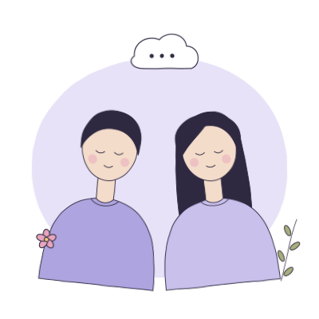
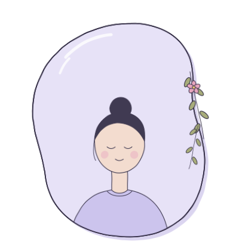

01
Relações que se repetem
A sensação de viver sempre a mesma história, com pessoas diferentes.
Terapia online para você e para o seu casal. Uma escuta psicanalítica cuidadosa para aquilo que insiste nas relações — consigo e com o outro.

A sensação de viver sempre a mesma história, com pessoas diferentes.
Brigas recorrentes, distância, dificuldade de conversar sem ferir.
Ceder sempre, ter medo de perder o outro, não saber dizer o que sente.
Um mal-estar difícil de nomear, que insiste e paralisa.
Perdas, rupturas e recomeços que pedem um tempo de elaboração.
Estar rodeado de pessoas e, ainda assim, não se sentir em laço.
Todos os atendimentos acontecem online, por videochamada, com o mesmo sigilo e acolhimento de um consultório.
Para adultos que desejam se escutar, compreender suas repetições e encontrar novas formas de estar nos próprios vínculos.

Um espaço para o casal olhar o que construiu junto, escutar o que se passa entre os dois e pensar o que deseja reinventar.
Você participa de onde estiver, com privacidade e sem deslocamento. Basta um lugar reservado, fone de ouvido e uma boa conexão.

A psicanálise parte da ideia de que há em nós algo que fala sem que saibamos — o inconsciente. Na análise, a palavra livre abre caminho para que esse saber apareça e ganhe novos sentidos.
A perspectiva vincular amplia essa escuta: somos constituídos nos laços com o outro. O sofrimento não mora apenas “dentro” de alguém, mas também no espaço entre as pessoas — e é ali que ele pode se transformar.
Escutar o vínculo é escutar o que nasce no encontro — e o que dele ainda pode mudar.
Você me chama no WhatsApp ou envia o formulário.
Tiro suas dúvidas e entendemos juntos o que você busca.
Escolhemos um dia e horário fixo semanal.
Você recebe o link da videochamada, simples de acessar.
Começamos — no seu tempo, com sigilo e acolhimento.


Sou psicóloga e atuo a partir da psicanálise, com ênfase na vincularidade. Acredito que cada pessoa carrega uma história tecida em laços — e que é possível, pela palavra, encontrar novas formas de estar consigo e com o outro.
Atendo adultos e casais de forma online, oferecendo uma escuta atenta, sem julgamentos e no tempo de cada um.
As sessões acontecem por videochamada, em horário fixo combinado. Você precisa apenas de um celular ou computador com internet, fone de ouvido e um lugar reservado.
Sim. A escuta, o cuidado e o sigilo são os mesmos. Para muitas pessoas, estar em um ambiente familiar até facilita a fala.
Não há um prazo fixo. A psicanálise respeita o tempo de cada pessoa; ao longo do processo, avaliamos juntos os caminhos.
Em geral, uma vez por semana, com duração de cerca de 50 minutos. A frequência pode ser ajustada conforme a necessidade.
Sim, o atendimento de casal acontece com os dois. Cada um pode estar no mesmo ambiente ou conectado de lugares diferentes.
Sim. Tudo o que é dito em sessão é protegido pelo Código de Ética Profissional do Psicólogo.
Dê o primeiro passo. Escreva pelo WhatsApp ou deixe seus dados que eu retorno o contato.